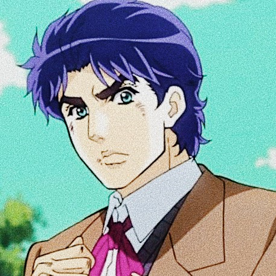
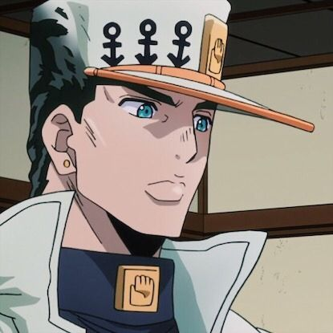
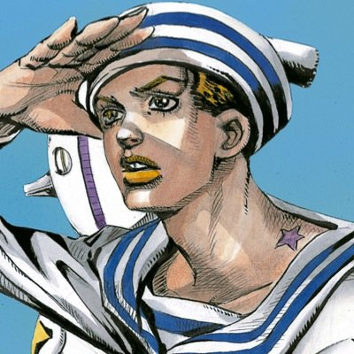
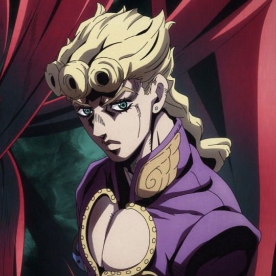
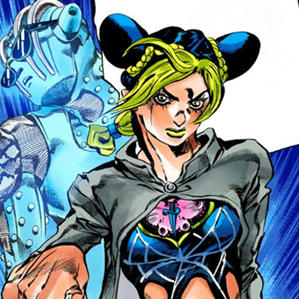
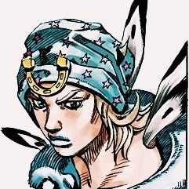

About
JoJo's Bizarre Adventure (Japanese: ジョジョの奇妙な冒険, Hepburn: JoJo no Kimyō na Bōken) is a Japanese manga series written and illustrated by Hirohiko Araki. It was originally serialized in Shueisha's shōnen manga magazine Weekly Shōnen Jump from 1987 to 2004, and was transferred to the monthly seinen manga magazine Ultra Jump in 2005. The series is divided into nine story arcs, each following a new protagonist bearing the "JoJo" nickname. JoJo's Bizarre Adventure is Shueisha's largest ongoing manga series by volume count, with its chapters collected in 130 tankōbon volumes as of May 2021.
Jojo's Bizarre Adventure's Protagonists
-

Jonathan Joestar
Jonathan is the main protagonist of the series' first story arc, Phantom Blood.
-

Joseph Joestar
Joseph is the main protagonist of the series' second story arc, Battle Tendency, and the grandson of the first arc's protagonist, Jonathan Joestar.
-

Jotaro kujo
The main protagonist of the series' third story arc, Stardust Crusaders, Jotaro is depicted as a rough delinquent with a noble heart.
-

Josuke Higashikata
Josuke Higashikata is the main protagonist of the fourth part of the JoJo's Bizarre Adventure series, Diamond is Unbreakable, and the fourth JoJo of the series.
-

Giorno Giovanna
Giorno Giovanna is the protagonist of Part 5 and the fifth JoJo of the JoJo's Bizarre Adventure series.
-

Jolyne cujo
Jolyne Cujoh is one of the main protagonsists of JoJo's Bizarre Adventure franchise, the main protagonist of JoJo's Bizarre Adventure: Stone Ocean
-

Johnny Joestar
Johnny Joestar is the protagonist of Steel Ball Run and a minor character in JoJolion. He is the seventh JoJo of the JoJo's Bizarre Adventure series.
Controversy
In May 2008, both Shueisha and studio A.P.P.P. halted manga/OVA shipments of JoJo's Bizarre Adventure after a complaint
had been launched against them from anonymous online Egyptian Islamic fundamentalists, after noticing a scene in the
OVAs that has the villain, Dio Brando, reading a book depicting pages from the Qur'an.[2][110] This recall affected the
English-language releases as well, causing Viz Media and Shueisha to cease publication for a year. Even though the manga
did not feature that specific scene, Shueisha had Araki redraw scenes that depicted characters fighting on top of, and
destroying, mosques for later printings of the series.[2] Viz resumed publication a year later, with the eleventh volume
being published on . Jason Thompson later included Shueisha's changes to the manga on a list of
The
Greatest Censorship Fails
in manga.[111]